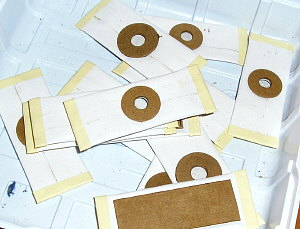
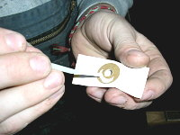

Dotaz: Aký náhradný materiál na miešky v pneumatickom nástroji je najvhodnejší z hľadiska kvality a životnosti, ak organista nemá k dispozícii kožu? Čím odporúčate lepiť miešky na svoje miesto, aby bola zaručená tesnosť a zároveň jednoduchá výmena? Čím sa prilepujú olovené kondukty? Mohli by ste uviesť nejaký postup pri výmenách mieškov? Ďakujem.

Míšky (membrány, taštičky, tobolky… viz kapitola o komponentech pneumatické traktrury) patří v pneumatické traktuře k nejporuchovějším součástem. Podle velikosti jsou vyrobeny ze similky nebo jemné kůže a jejich životnost je minimálně 50 let (s ohledem na vytížení nástroje a díky degradačním vlivům – střídání vlhkosti, kolísání teplot, biologickým škůdcům – hmyzu a plísním může být i výrazně kratší). Pokud byly při stavbě varhan použity kvalitní materiály, může být životnost kožených součástek i větší, v současné době se začínají ve větší míře „kazit“ nástroje s průměrným věkem okolo 70 let (stavěné v třicátých létech minulého století, kdy nastal masivní rozvoj pneumatických nástrojů s tlakovou i výpustkovou trakturou, která v té době byly považována za technickou špičku).
Jako základní materiál pro výrobu míšků všech typů je používána similka (similiblána, speciálně opracovaná blána z trávícího traktu jatečních zvířat), pro větší míšky pak štípaná kůže. Za prvotní materiál pro výrobu náhrady se tyto materiály považují dosud, problémem je ale jejich současná nižší kvalita (soudobé intenzivní zemědělství je orientované na výrobu výsledného produktu v co nejkratším možném čase s co nejnižšími náklady, zvířata jsou krmena pomocí směsí, které se přirozené potravě ani nepodobají a šlechtěna tak, že druhotné produkty, jako např. kůže nejsou podstatné, ale to je na jinou diskusi…). Similka samotná a mnoho druhů varhanářských kůží různé tloušťky a kvality jsou dnes už běžně dostupné (přímo Laukhuff nebo zprostředkovaně přes varhanáře či opravny hudebních nástrojů). V minulosti byly prováděny více či méně úspěšné pokusy o náhradu přírodního materiálu některým syntetickým (plastové fólie – „igelit“, mikroten, impregnované tkaniny), životnost těchto materiálů se však ukázala překvapivě krátká, navíc měly další nectnosti (obtížné lepení, hlučnost při chodu (šustění), citlivost na změnu teploty (vyšší než u kůže). Jediný materiál, který se osvědčil a používá se ve varhanách je Polypel (syntetická membrána, odolávající kyselinám i zásadám a biologické degradaci). Výrobce garantuje minimálně 60 letou životnost (což je v současnosti více, než u přírodních materiálů). Technologie zpracování (výroby míšku) je téměř shodná s klasickou, jen pro lepení je určeno speciální lepidlo.
Při výměně míšku v traktuře je nutno pamatovat, že kromě vlastní „opravy“ tj. obnovení funkce příslušného uzlu je nutné zachovat i možnost budoucí výměny, k opravě (především lepení) musíme proto použít takové materiály, které budou v budoucnu odstranitelné. Vyloučeno je proto např. použití lepidel na akrylátové bázi (kyanokryláty, sekundová a podobná rychlá superlepidla) a chlorkaučukových lepidel (Chemoprén). Přípustné je použití teplého kostního klihu (klasická technologie) nebo studeného „bílého“ klihu (kaseinová náhražka), méně vhodné je použití kaučukové disperze (Herkules – vodou je téměř neodstranitelná).
Běžná technologie výměny využívá vlastností klihu – starý míšek je odříznut od lišty relé nebo kancely nožem v místě kroužku, zbytky papíru (prešpanu) se navlhčí teplou vodou nebo technickým lihem. Po chvíli lze změklý (nabobtnalý) klih seškrábnout a setřít, na takto očištěné dřevo se pak přiklíží míšek nový. Díky vlastnostem klihu lze nový míšek v případě nutnosti používat okamžitě, není nutno čekat na uschnutí (odpaření vody).
Olověné kondukty se v minulosti i současnosti lepily
a lepí teplým klihem, pro utěsnění se používá i včelí vosk (nebo směsi
vosk, klih, kalafuna). V případě nutnosti lepení většího počtu konduktů
je dnes lepší použití speciálního lepidla (Syndetikon, dodává Laukhuff),
používá se i Chemoprén, ten však není nejvhodnější.